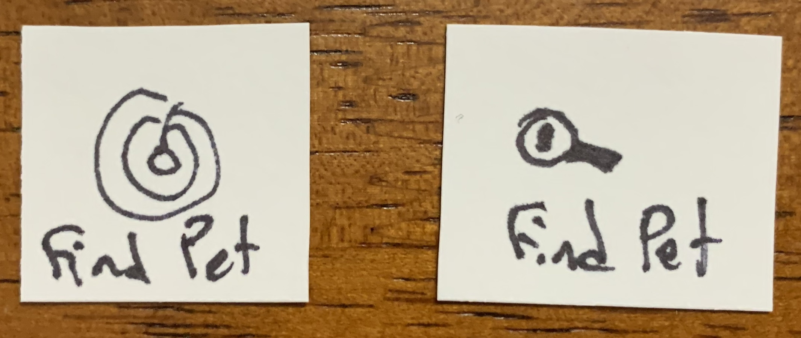

Project Summary
Find My Pet is a mapping application connecting to a GPS transmitting dog tag. The product allows people to track down wayward pets who may have got lost, run away, or been dognapped. My role was to research, design, and test the mapping application.
Design Tools & Methods Used
User affinity sorting, personas, paper prototyping, wireframes, Sketch, A/B Testing, electronic prototyping.
Define
Strategic objectives
The design of the GPS dog tag has been finalized. All work needs to be done for the application.
Requirements
The company is thinking of a smartphone application for the mapping system, but leaves the final decision of implementation and use to be based on the user need. If the user research shows a better use of the product would be to help parents find their wayward teenager, the team would design that instead. It will depend on the user research.
Business & User Goals
Track wayward pets. The user research will show the user needs and the changes the app will need to meet them.
Discover
User Research
I interviewed 5 people, age 25-65, to evaluate the need for the system. I focused on the body language as well as the verbal responses from the participants.
Affinity Sorting
I used affinity sorting to define my personas and red routes.
Above shows the results of the affinity sorting. The yellow notes are observations I made and the green notes are the common themes or tasks of the observations.
Personas
Three groups stood out: experienced wayward pet owners, users concerned about petnappers, and tech savvy users who like many features in applications.
My primary persona is Karl Carson. I knew if I was able to satisfy this user's needs then I would also satisfy the needs of 4 out of the 5 uses. In order to please the tech savvy user an update could be made available that let the user track the pet's movements and provides satistics about the pet's health.
Karl Carson is a 30 year old male who lives alone with his 2 year old Chihuahua Fluffy. Karl often leaves Fluffy alone at home when he goes out and is worried Fluffy might escape if he leaves a window open by accident. He has had pets run away before so he knows that immediate action is required to find them. He wants to feel comfortable leaving Fluffy at home knowing that he will recieve a notifcation if Fluffy leaves the perimeter around his house.
Based on the user research I found that the application would work best as a mobile application and it needed to incude easy to use mapping, detailed navigation, a list of contacts like the local shelters, and the ability to add multiple pets.
I created red routes for the application and the main secenario of use based on my primary person and its user story.
Karl is out at dinner when he gets a notification that Fluffy has left the set perimeter. He opens the Find My Pet application and uses it to search for and find Fluffy.
Design
Sketches
I drew out the main screens that would be needed to complete the goal of the main secenario.
Above is an image of one of the pages of sketches I created to iterate through ideas to find the one that would best work for the application.
Paper Prototyping
I created paper prototypes to iterate through many designs based on the list of required features. These were used for user testing.
Above is an image of all the pieces of the paper prototypes I created including those for A/B testing.
A/B Testing
A/B testing was used to identify the most intuitive features.
Starting on the "Find Pet" page instead of a home page with options of actions was preferred by 4 out of 5 users.

4 out of 5 users found the magnifying glass more intuitive than the radar for the Find Pet icon.
3 out of 5 users preferred just having a bottom navigation bar with the options instead of a bottom navigation bar with a home link and a hamburger menu with the same links.
4 out of 5 users preferred icons for all pages of the application instead of a text only but larger button for the Find Pet page.
Usability Testing
Once the screens had the most intuitive features I performed usability testing with 6 users, age 24-52. The application concept was relatively straightforward so I wanted to test if my prototype was as streamlined as I thought.
Redesigns to the paper prototype that came from this testing were:
- Added the breed to the pet’s profile
- Bigger size on the font for the maps screens after the observations “I can’t read that”
Electronic Prototyping
After the usability tests had concluded I created an electronic prototype in Sketch.
Measuring Usability
Effectiveness: The success rate of participants correctly completing the goal for the scenario unassisted was 100%. The participants also completed 100% of the tasks on the first attempt.
Efficiency: The average time taken to complete each task was less than a minute. 100% of participants were able to find a pet with no added clicks. There were no errors to correct.
Satisfaction: There were no negative reactions to the application. Positive reactions included "It gives me very clear directions to find the lost pet," "I knew what I needed to do easily," and "it was pretty intuitive to use."